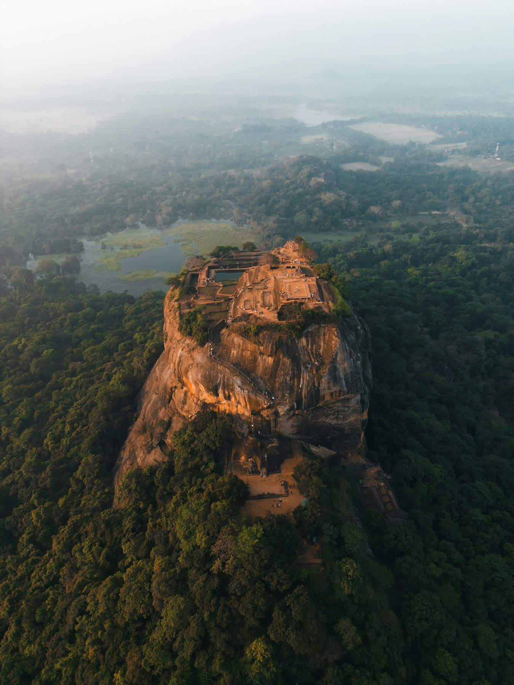
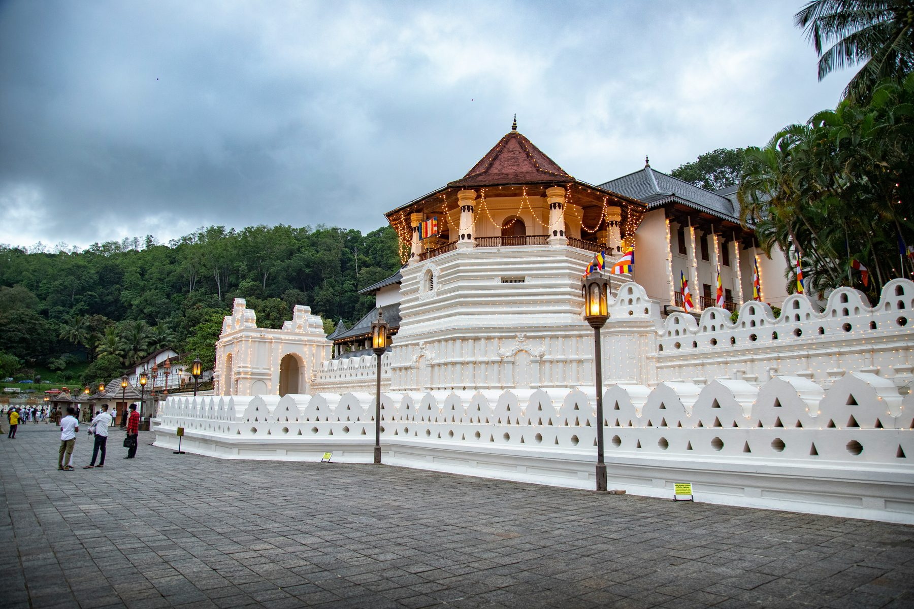
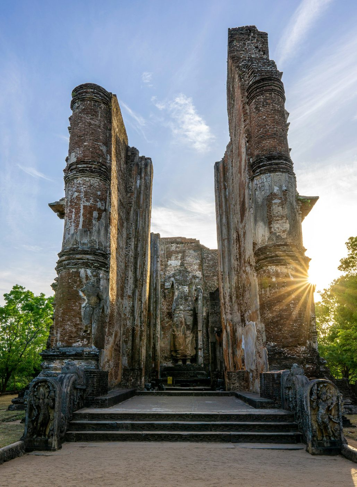
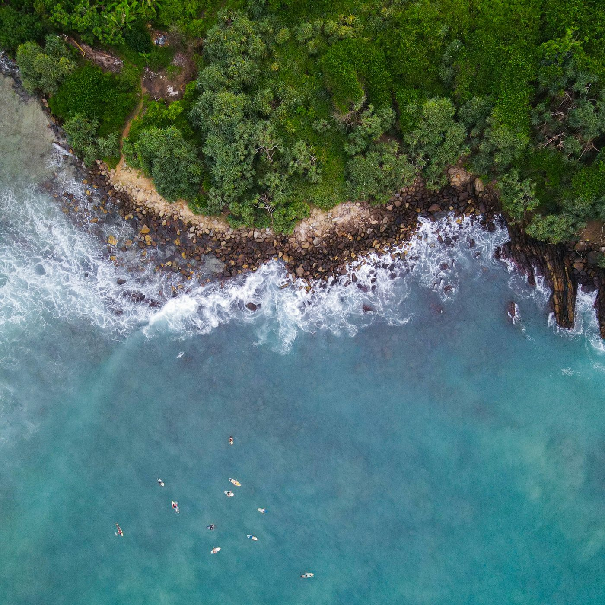
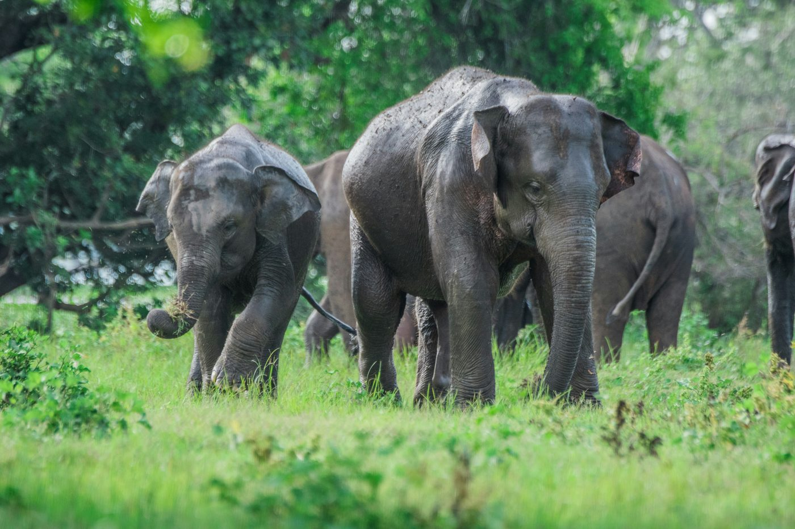
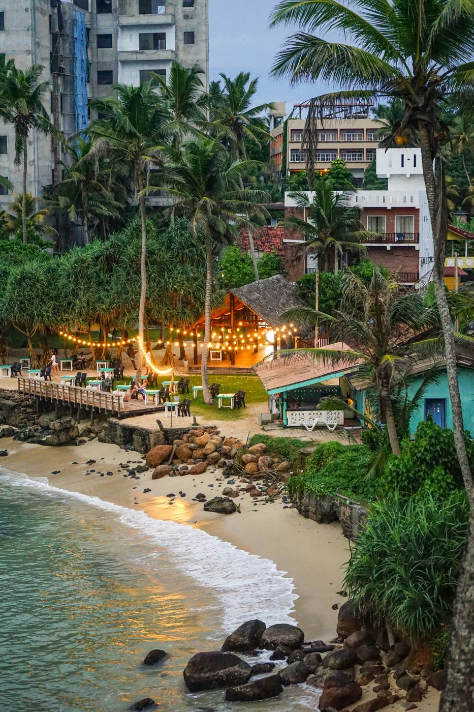
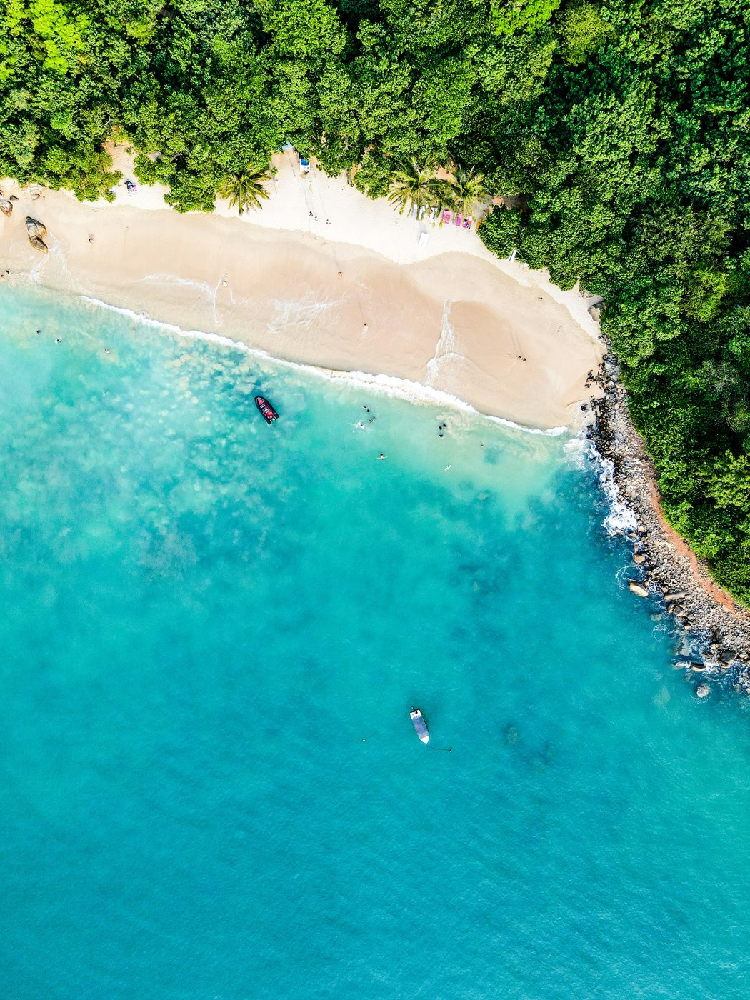

Sri Lanka · Sustainably Crafted
Discover
the Soul
of Sri Lanka
Slow, soulful journeys crafted by Sri Lankans for the curious UK traveller. Tea trains, wildlife safaris, ancient temples — unhurried, unscripted, unforgettable.

Why Tamarind Trails
Sri Lanka is best
experienced slowly.
We design small-scale, sustainable journeys for UK travellers who want more than a checklist of sights — crafted by Sri Lankans who know the stories behind the scenery.
Choose
Your Trail
Five signature collections, each crafted around a different experience — or we’ll build yours from scratch across three comfort tiers: Essential, Boutique and Signature.

Heritage &
Culture
Ancient kingdoms, sacred temples and misty highland peaks. Eight iconic stops, seven unforgettable days.
Read More
Wildlife & Coast
Raw highlands, safari wilderness and tranquil southern shores.
Read More
Adventure Tours
Slow discovery across heritage, wild horizons and hidden coasts.
Read More
Wellness & Ayurveda
Ask About This Trail
North & East Coast
Ask About This TrailAll itineraries are available in three experience tiers — Essential, Boutique and Signature. Prices on request. International flights not included.
Your Tamarind Trail,
Step by Step
Share Your Vision
Tell us your dreams — your tastes, pace, and budget. We listen first.
Local Design
We craft a realistic, unhurried route through hidden paths and authentic stays.
Perfect the Plan
We refine the details together until the pacing and pricing feel exactly right.
On-the-Ground Heart
Expert local support from arrival to farewell. You're in safe, friendly hands.
Travel with Purpose
Go beyond the sights. We share the stories and history that turn a trip into a lifelong memory.
Turn Your Journey into a Legacy
Choose your impact. Your trip can leave something real behind.
Paws & Support
Animal Sanctuaries
Volunteer your time at local animal sanctuaries. Give Sri Lanka's animals a safer, kinder future while building a connection that goes beyond sightseeing.
Rooted in Nature
Reforestation Efforts
Join reforestation efforts — from inland forest to vital mangrove planting and community gardens. Actively restore the landscapes you have come to love.
Clean Currents
Protect Our Waters
Gather micro-plastics while kayaking or join beach cleans along our coastline. Keep the waters that make Sri Lanka extraordinary clean for generations to come.
Shared Strength
Community Projects
Direct solidarity through community-led projects and local heritage support. Your presence strengthens the very communities that make your journey meaningful.
Don't just visit — contribute. Bring home a story that matters.
Plan Your Impact Journey
Free consultation · No obligation
Your Sri Lanka Story
Starts Here
Share your dream — we'll design a one-of-a-kind Tamarind Trail. Tea trains, safaris, temples, beaches. Just tell us what moves you.
At the Heart of Everything We Do
Tamarind adds a tangy, unforgettable zest to our island’s flavours — and we want your journey to leave that same vibrant impression without a bitter footprint.
Local Stays & Guides
We prioritise locally-owned stays and expert regional guides to ensure your travel directly supports Sri Lankan communities.
Animal Welfare First
By vetting every partner for strict animal welfare and environmental ethics, we eliminate activities that harm wildlife.
Conservation by Default
From reducing plastic to supporting local conservation initiatives, our sustainability choices are woven directly into your itinerary.
A Force for Good
With Tamarind Trails, your adventure isn’t just a trip — it’s a force for good for the island and everyone who calls it home.
Plan Your
Tamarind Trail
We'd love to hear about your dream trip. Tell us a little about what you're looking for and we'll craft something truly special — at your pace.
Based in Sri Lanka · UK timezone support available